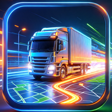

Buscando o sinal do GPS…

Instalar no iPhone:
1. Toque no botão Compartilhar (o quadrado com a seta para cima) na barra do Safari.
2. Escolha Adicionar à Tela de Início.
3. Toque em Adicionar. Pronto, o ícone do caminhão aparece na sua tela.